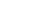

<nav class="ami-component-binnacle-navbar">
    <span routerLink="/add" routerLinkActive="active">
        
    </span>
    <span routerLink="/history" routerLinkActive="active">
        
    </span>
    @if(isYellowFloresDay()){
        <span routerLink="/yellow-flowers" routerLinkActive="active">
            
        </span>
    }
</nav>
